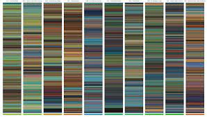
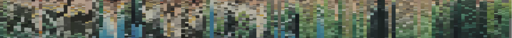
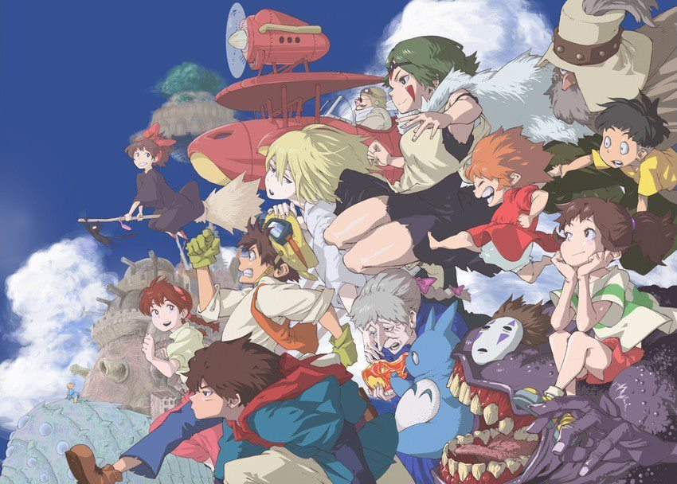

Close Reading - Interaction for Data Visualisation
My aim with my data art was to portray my perception of the Studio Ghibli dataset. When it comes to data, even if one takes the stance that data is neutral, it is almost impossible to view data visualisation as impartial. This is because the person analysing the data goes through a process of filtering in which they discard data they feel is irrelevant to the story they are trying to convey. The “[d]ata visualisation process is […] designed to engage the viewer in envisioning […] the stories associated with particular information” (Taylor, 2017). The points in my dataset are surrounded with the statistics surrounding individual stories. With my data visualisations, I used these statistics to show the viewer that the films were high ranking, and reasons which I thought may have contributed to their high success rate. However, with my data art, my aim was to display a more visual aesthetic in order to rope the viewer into the individual stories of the actual data points i.e., each movie, as opposed to the trends that are displayed overall.
I was not sure if the API I chose would work for creating the type of art I wanted to curate with my data. Hence, I am considering creating my own database or seeing if I can find a collection of images from the film. It was important for me to be working off some sort off dataset as for an “artwork to be classified as a visualisation, must be based on actual data” (Taylor, 2017). I would then use those images to create an artwork which would look similar to a collage but also a colour script. Colour scripts are commonly used in animations to convey the tone and pacing of the film. Therefore, I felt it would be fitting, to use photographic data from the films to create an overarching view of the film's visual colouring. This may help users on my site who have not seen some of the films to pick which one they would like to see, as they can filter through the art for happier (brighter coloured) films. In the same way, they can filter for films which seem to be set in nature (green/blue) as opposed to industrial (grey) based films.
Figure 1.
Figure 2.
In terms of how I would implement the colour script/collage my data art. I have a number of options in mind. One would be to only use the collage of colours in the background and then to create a new dataset containing all of the images of the main characters from each film. I would then combine all of the characters. For the background, I would take the main colour from the cover of the film and then align each colour side by side, add in a smooth transition between colour changes to show the shift in background colours of the movie posters over time. An example of the combined characters without the specialised background can be seen in figure 3.
Figure 3.
Another idea I had was to create a single movie poster/collage for all of the ‘Studio Ghibli’ movies. As I want my data art to communicate a visual overview for all the movies. This poster would be a collage of all the images in the dataset carefully positioned around the title, ‘Studio Ghibli’. The dataset contains images of all the cover posters from each movie therefore I would just be trying to arrange each image in a way which allowed each individual poster to be seen clearly. I then would also add in an element of interaction, where the user just needs to hover over each image in order to see an expanded version of that movie’s cover image. I also think it would be interesting to add in a filter process which when certain movies were unselected from a list, the collage would reorder itself and resize all of the images to accommodate the changes. This would require an algorithm which would ensure that regardless of which movies where selected, the title could be seen at all times, and that there was no unnecessary background space, as the movie covers would be layered on top of one another filling up the pre-defined grid space.
My data art was not really designed with the idea of providing a new way of thinking about the data but rather aims to reinforce the ideologies already implemented by the website. The aim of my art is to lure the viewer, and leave them wanting more. Therefore I wanted my data art to be visually striking yet also give the viewer a quick insight into what each movie is about.
I wanted my data art to enhance the purpose of my website. This meant making the movie franchise come off as appealing as possible. This is why I felt it would be beneficial for my data art to mimic advertisements, in order to lure the viewer into engaging with the Studio’s work in the same way an ordinary movie poster would. I wanted to curate a visual summary of the franchise’s work by using all 22 cover’s for the film, to create one large overview for the film series. Moreover, I wanted to use the affordance that comes with it being digital and manipulated by data to incorporate interaction.
In terms of improving my data art, I think it would be beneficial to add in an informative interactive component. It would be more intriguing for the viewer if when they hovered over a character, some information which was relative to who they are and what the movie in which they star in is about, could appear, as a “good visualisation […] includes information […] and visual form” (Taylor, 2017). I would also like the background to change depending on what the background of the movie cover is about. As colour does have ability to build certain expectations and bring about connotations on what type of emotions the film is attempting to convey in the viewer. I think interaction would enhance this type of visualisation because it “heavily involves the spectators”(Wong, Jung & Yoon, 2009). It also expands the volume of information the user can extract form the artwork, as they can examine the aspects of the work which drawn their attention.
References
Evanthia Dimara, Charles Perin. What is Interaction for Data Visualization?. IEEE Transactions on Visualization and Computer Graphics, Institute of Electrical and Electronics Engineers, 2020, 26 (1), pp.119 - 129.
TAYLOR, P, G. 2017. Artistic Data Visualisation and Assessment in Art Education. Visual Arts Research. Vol. 43 (1), Summer: pp. 59-75.
WONG, C. & JUNG, K. & YOON, J. 2009. Interactive Art: The Art That Communicates. Leonardo. Vol. 42 (2), pp. 180 – 181.
VIEGAS, B, F. & WATTENBERG, M. 2007. Artistic Data Visualisation: Beyond Visual Analytics. Visual Communication Lab. England: The University of Cambridge.